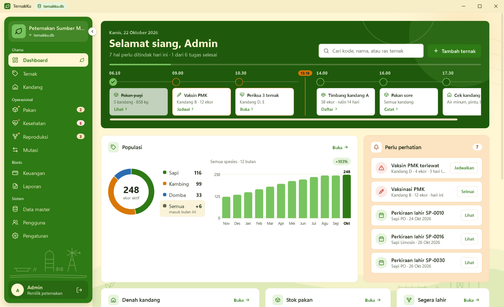
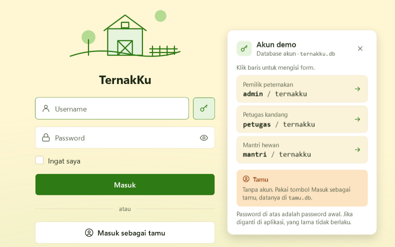
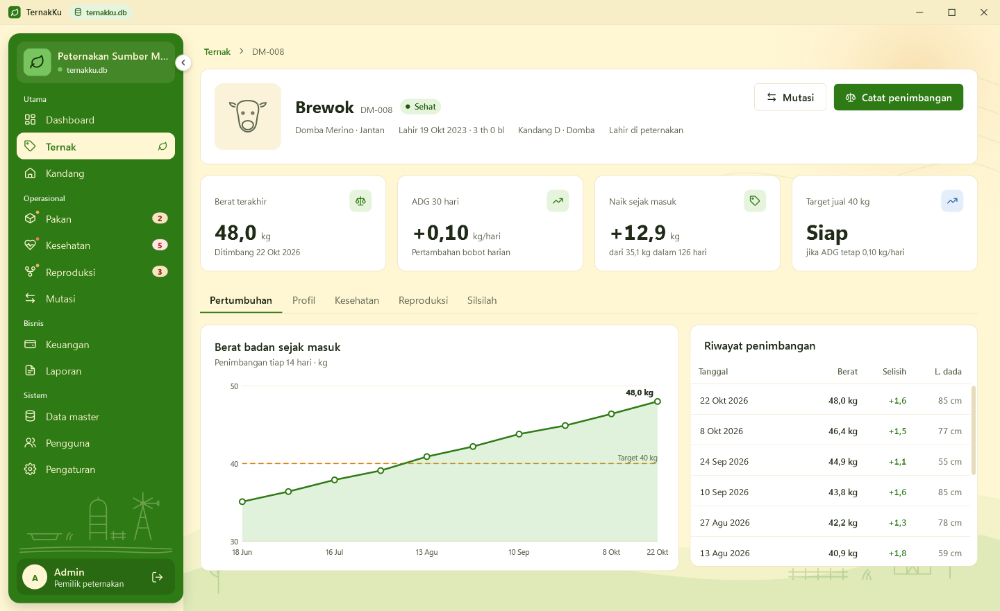
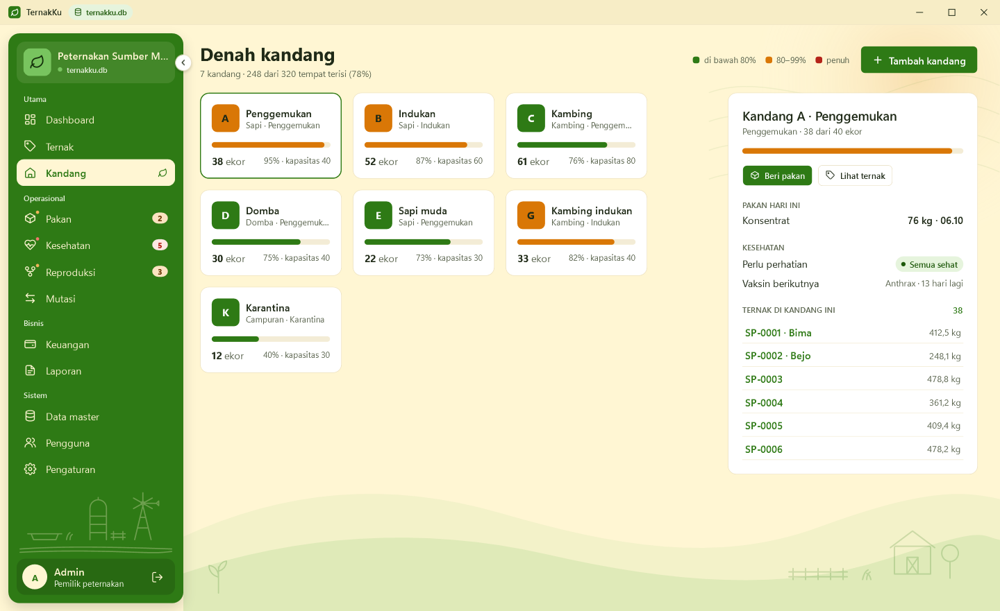

TernakKu
Ternak, pakan, dan kesehatan tercatat di satu tempat.
Aplikasi desktop manajemen peternakan sapi, kambing, dan domba: dari ternak masuk, tumbuh, dirawat, dikawinkan, sampai terjual.

Masalah di peternakan dan solusinya
Buku catatan kandang diganti satu aplikasi
Data ternak di buku tulis, mudah hilang dan sulit dicari
Data ternak
Kode ear tag, pencarian dan filter, umur otomatis, profil dan silsilah.
Pertumbuhan berat tidak dipantau, waktu jual meleset
Penimbangan
Grafik berat, ADG (kg/hari), dan perkiraan hari mencapai target jual.
Jadwal vaksin dan pemeriksaan sering terlupa
Kesehatan
Kalender vaksin, pengingat 3 hari sebelumnya, riwayat dan stok obat.
Stok pakan habis tiba-tiba tanpa peringatan
Pakan
Stok gudang Aman/Menipis/Habis, cukup berapa hari, pemberian per kandang.
Perkawinan dan perkiraan lahir tidak tercatat
Reproduksi
Kawin alami atau IB, hitung mundur H-n, anak langsung terdaftar.
Untung-rugi usaha tidak jelas, laporan lama dibuat
Keuangan dan laporan
Kas otomatis dari pakan dan penjualan, laba bulanan, PDF dan Excel.
Tampilan aplikasi
Tema terang dan gelap, menu menyesuaikan peran



Pengguna dan cara pakai
Peran dan hak akses
Cara pakai
- 1Buka TernakKu.exe, tanpa instal .NET
- 2Login sesuai peran, atau masuk sebagai tamu
- 3Catat penimbangan, pakan, dan kesehatan harian
- 4Pantau dashboard, cetak laporan PDF atau Excel